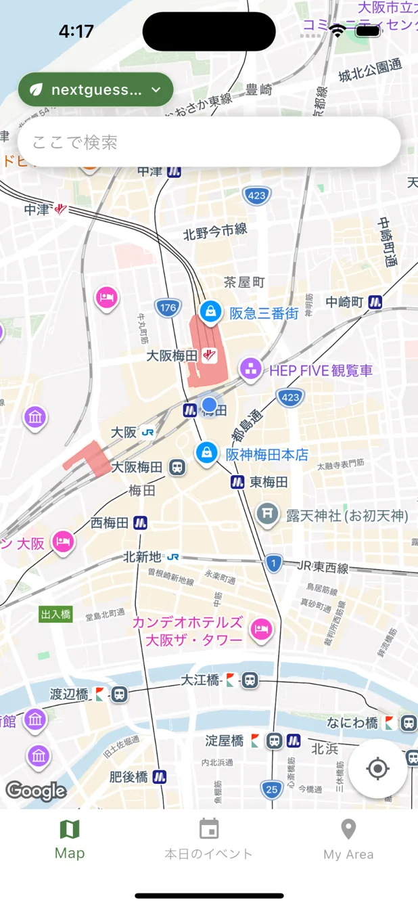
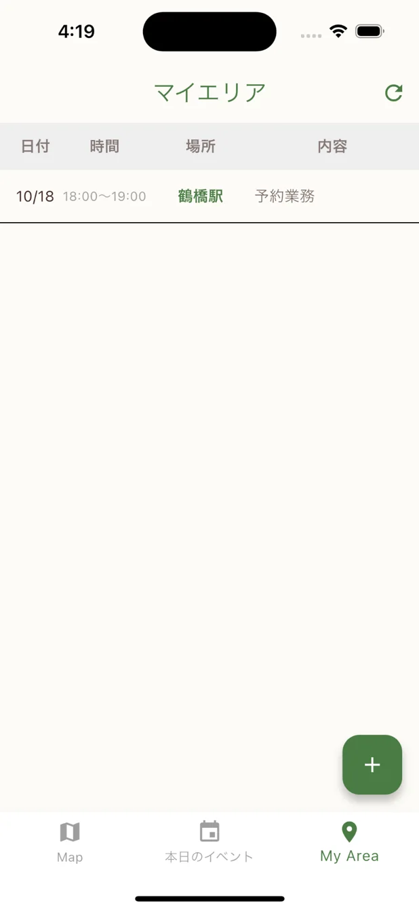
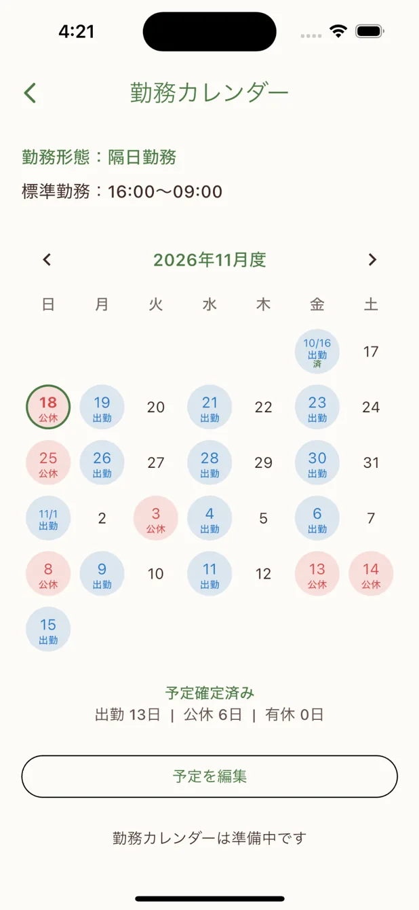
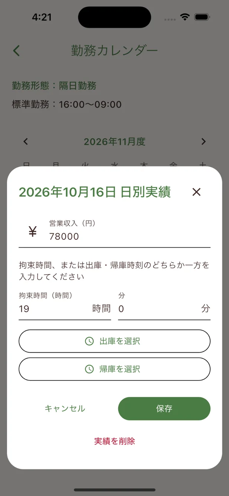
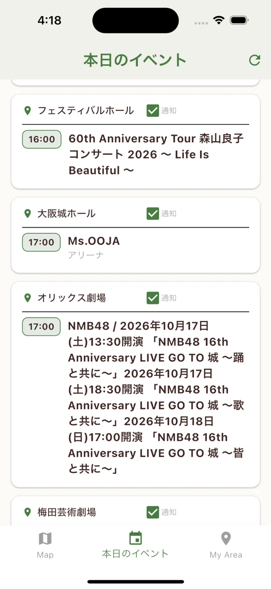
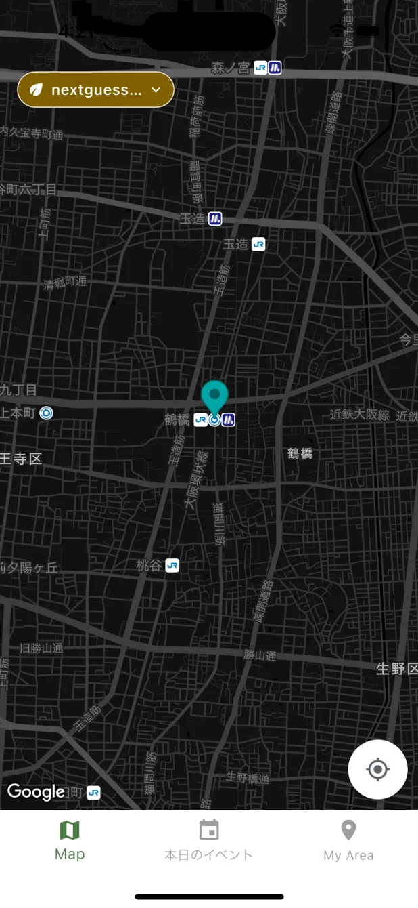

イベント × MAP
イベントの開催情報を地図と一覧で確認。


過去のデータを、次に向かう場所の判断材料へ。
今できることを見る ↓イベント情報を確認して、自分の場所と勤務記録を管理する。いま動いているNextGuessの主な機能です。
イベントの開催情報を地図と一覧で確認。

自分の地点や予定を登録して、地図と一覧で管理。

出勤・公休などを記録して確認。

日ごとの営業収入と拘束時間を記録。

※掲載した画面は開発版の実際のスクリーンショットです。現在はiOSテスト配布中です。
選択肢はたたき台。「それ以外」の案も歓迎です。まだ決めていないことが、参加するきっかけになる。
このサイトには話のきっかけだけ置いています。ABCから選んでも、別の案でも、いつも見ているサイトの紹介でもOK。話す場所はLINEオープンチャット。以下の選択は送信されないデモです。
議題を読み込み中…
完成を装わず、準備中のものは準備中として伝えます。
読み込み中…
公開できる実数が揃ってから掲載します。推測値や架空の参加者数は表示しません。
集計値のみ公開。個人の営収・位置情報・LINEでの発言全文は掲載しません。
出た意見を、無理に全部実装する必要はありません。今の考えと理由、変わった経緯を残します。
読み込み中…
LINEの発言は無断転載しません。公開するのは確認済みの要点のみ。個別の乗客・勤務先・営業収入・具体的な乗車習慣は掲載しません。
こちらはシミュレータで撮影した実際のNextGuessです。議題の比較画像は構想図であり、未実装です。


初めて使う人にも分かるよう、基本操作をまとめていきます。
読み込み中…
専門的な知識も、定期的な報告も必要ありません。サイトの話題を見て気になったら、LINEオープンチャットへ。機能の話でも、便利な公開サイトでも、営業中の「もしこうだったら」という雑談でも歓迎です。話題と決まったことは、個人が特定されない形でこのサイトに残していきます。
今はこう考えています。
でも、条件が変われば
答えも変わる。
旧ツールに端末保存されているデータは、NextGuessに自動で移行されません。移行手順と個別対応の窓口を準備しています。
移行が完了するまでは、ブラウザのサイトデータ削除・旧ツールのデータ削除をしないでください。